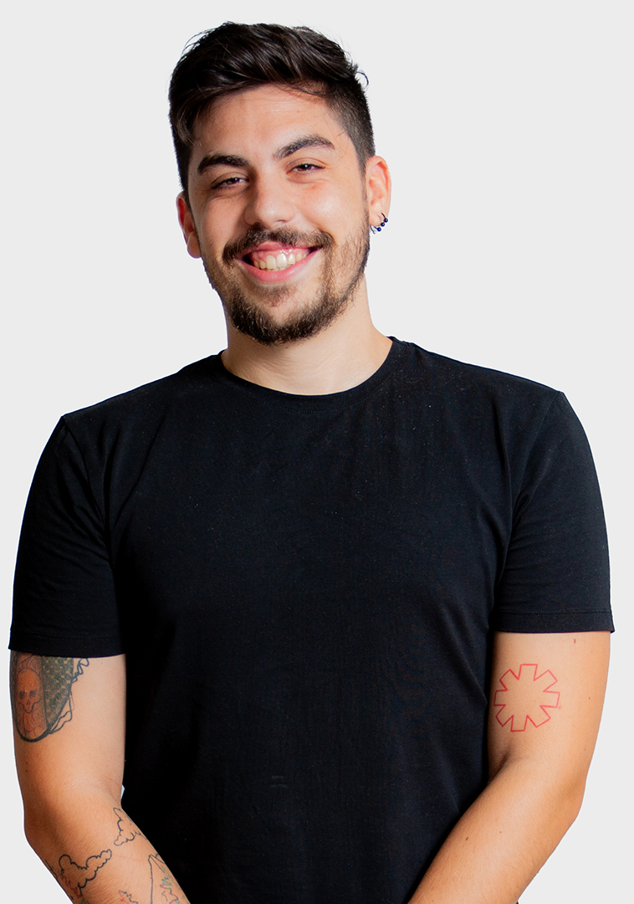

Diseñador gráfico // Diseñador web // Diseñador UX/UI // Maquetador web y App's //
Diseñador gráfico // Diseñador web // Diseñador UX/UI // Maquetador web vy App's//
Mis comienzos en el sector
Grado superior de animación 2D, 3D y entornos interactivos.
Máster en ciberseguridad
Máster en ciberseguridad
5
años deexperiencia
+300
proyectos realizados
Desde el minuto uno, he tenido la oportunidad de trabajar con grandes profesionales, los cuales me han formado en maquetación web aprendiendo nuevos lenguajes como html, css, javascript o python desde sus cimientos, mientras desarrollaba mi rol de diseñador. He sido encargado de proyectos completos, desde la creación de marca, diseño web y app hasta remarketing y publicidad, siguiendo siempre una correcta metodología, de forma proactiva y resolutiva.
Mi objetivo siempre es ayudar a los clientes a visualizar lo mejor de sus negocios, y con mi trabajo, comunicar visualmente su verdadera esencia. En 6 años, he diseñado y maquetado unas 300 webs y App's.
Experiencia
Tras 5 años llevando a cabo proyectos de diferentes dificultades y sectores, soy proactivo y resolutivo, me adapto a los tiempos de cada proyecto y mininizo posibles problemáticas.
Mis principales herramientas de trabajo son:
Mis principales herramientas de trabajo son:
- Adobe suite: (Photoshop, Illustrator, After Efects, Premiere Pro, InDesign)
- Figma: Nivel experto con 4 años de experiencia
- Programación: Html, CSS, Javascript, Wordpress y CMS personalizados a alto nivel


01
Diseño gráfico
Teoría del color, conceptualización y creatividad. Muchas horas dando forma a las ideas de todos y cada uno de los clientes con los que he trabajado, desarrollando imágenes de marca, dossieres, logotipos, flyers, banners y ads, elementos gráficos para imprenta y edición de vídeo.
02
Diseño web y App
Además de un diseño atractivo, las páginas y las Apps deben contar con un buen UX, arquitectura del software y diseño adaptable a todo tipo de dispositivos y navegadores. Diseño teniendo en mente mis conocimientos de maquetación para entregar un producto fiable y pulido, además de facilitar el proceso de maquetación y programación.
03
Imagen de marca
Realizo estudios completos de marca mediante reuniones y seguimientos e investigación de cada campo para entregar un producto final completo, construido desde sus cimientos. Todo ello para crear una identidad visual clara, unos mensajes definidos y unos elementos gráficos listos para abrir un negocio o rediseñar una marca.
04
Programación
Html, javascript, librerías, hojas de estilos, frameworks personalizados y cms como wordpress. Mi principal función es la maquetación web, pero he colaborado en proyectos de App's y de softwares personalizados.
Por último, doy gracias por haber llegado a este punto de mi porfolio, y espero tener una entrevista en la cual desarrollar mejor todas las ideas presentadas, mi trabajo hasta ahora y cualquier duda que pueda surgir antes de unirme a vuestro equipo. ¡Muchas gracias!
Contacto
Dirección
Calle Quilla
Urb. Pueblo Torrequebrada
Benalmádena, Málaga
Urb. Pueblo Torrequebrada
Benalmádena, Málaga
Email
nacarsa@icloud.com